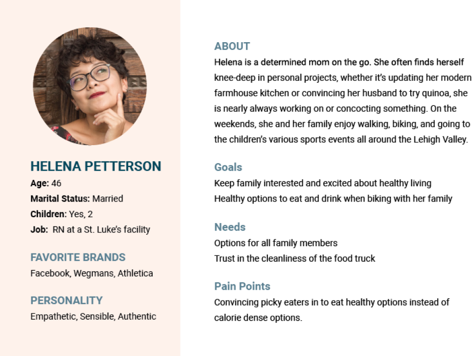
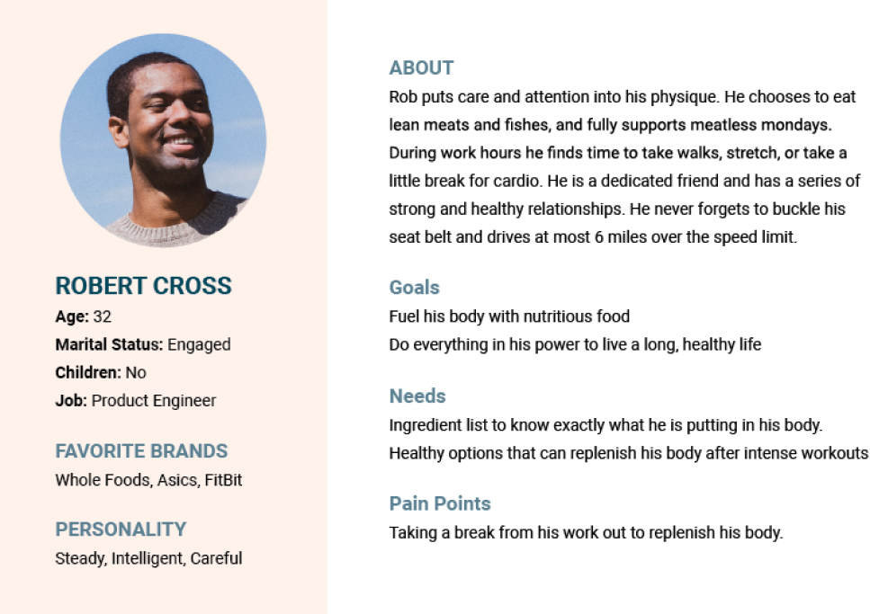
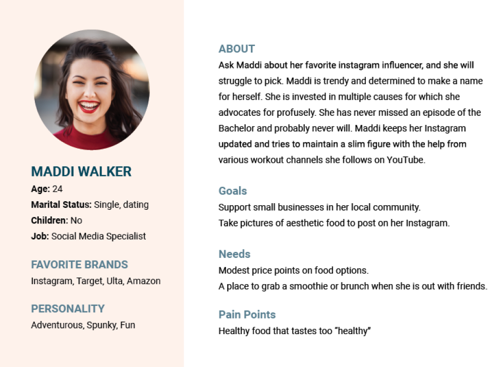
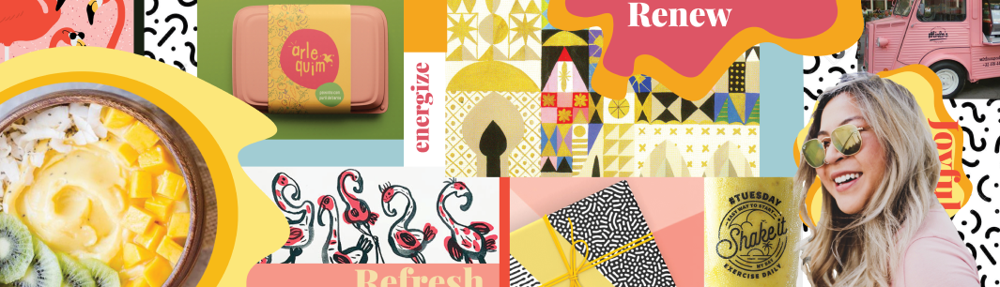

JoJ0 Bowls (WIP)
Branding a Smoothie Acai Bowl Start Up
BACK
NEXT
Branding For The User
JoJo Bowl’s food truck seeks to spark joy by providing fresh smoothies and smoothie bowls to park goers in the Lehigh Valley. The owner and I concluded that the brand's mission to provide joy and rejuvenation needed to be at the forefront of JoJo Bowl’s branding system, mobile ordering site, and artwork for the truck.
Interlocking the brand with the customer helps to build a relationship, trust, and overall experience. At the beginning of a branding project, I believe in learning as much about the customer as possible to best suit their needs and wishes, JoJo Bowls was no exception. After researching the target market, three customer personas were created to put a face to the research and help focus the target of the branding.
  Stylescaping to Suit the Customer
After reviewing the customer personas, my client identified “Maddi” as her most typical customer. This meant that our stylescapes needed to attract “Maddi” the most often while not alienating the two other personas. Color schemes, type choices, and imagery arranged as unique branded story options, a process called “stylescaping.”
Energetic Sunshine
- Fast-Paced
- Bright
- Fresh
Playful Berries
- Joyful
- Bubbly
- Inviting
Refreshing Friend
- Relaxed
- Coastal
- Spa-like
Landing a Visual Language
The client felt that the "playful berries" stylescape displayed joy but "rejuvenating friend" brought a sense of calm, inclusion, and comfort. From the stylescapes we landed on a visual language with the same flair, colors and funky illustrations as the “playful berries” with the inclusion of the natural woods from the “rejuvenating friend” stylescape. We also determined that the direction of the “endless sunshine” stylescape was too paunchy for the majority of the customer base.
*Please note that this is a work in progress. It is not complete, but will be updated along the way.*
Contact
I am always up for a good cup of coffee (virtually or not)! I’d love to hear from you!
Contact ME